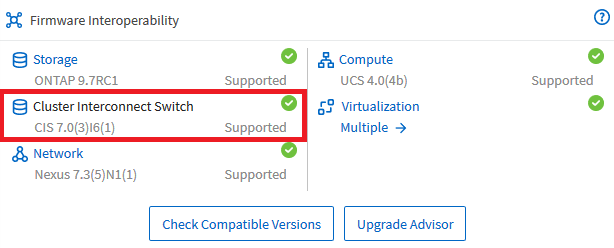
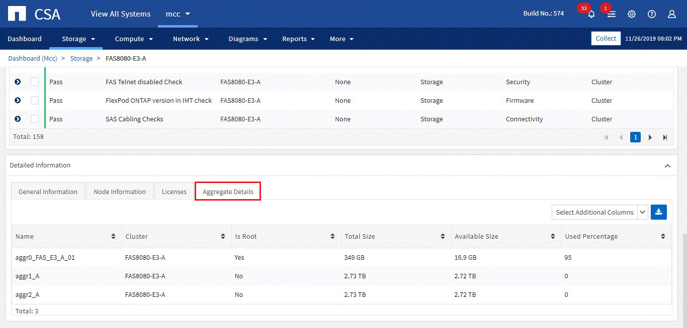

要求變更文件
要求變更文件 編輯此頁面
編輯此頁面 瞭解如何作出貢獻
瞭解如何作出貢獻歸檔「融合式系統顧問的新功能」
NetApp會定期更新Converged Systems Advisor、為您帶來新功能、增強功能和錯誤修復。
若要確認FlexPod CSA代理程式支援哪些元件、請參閱 "NetApp 互通性對照表工具" （僅限部分）IMT 。
內容
2020年4月30日
此版本包含下列增強功能：
升級顧問
現在您可以使用ONTAP Nexus和UCS元件檢查VMware vCenter和VMware版本的相容性。若要檢查相容性、請使用儀表板中「韌體互通性」下的「升級顧問」。支援您看到的所有版本。
叢集互連交換器
*叢集互連交換器*已新增至儀表板檢視的*韌體互通性*下。現在您可以監控ONTAP 下列機型的支援功能：
-
Cisco Nexus 3132Q-V
-
Cisco Nexus 3232C
-
Cisco Nexus 2300YC

在代理程式中、您現在可以在*新增裝置資訊*下拉式功能表中、將叢集互連交換器新增為裝置。

容量卡增強功能
我們也新增網路連接埠使用率和UCS刀鋒伺服器使用率的連結、協助您監控FlexPod 及擴充您的支援基礎架構。在儀表板檢視中、當您移至容量時、會看到兩個新連結。
連接埠使用率連結至網路層介面的詳細資訊。
UCS刀鋒伺服器使用率連結可連結至運算層中刀鋒的詳細資訊。
系統圖表警示
您現在可以在系統的圖表檢視中看到警示、以便更有效地監控基礎架構。
2020年2月3日
此版本包含下列增強功能：
導覽增強功能
-
此版本可讓您在*檢視所有系統*中查看所有系統。
-
您可以更輕鬆地查看及瀏覽元件層的結構。您可以使用下拉式功能表和箭頭來檢視您的裝置。
-
使用階層連結追蹤功能、也能更輕鬆地從儀表板（首頁）檢視中導覽。

Aggregate詳細資料
在儀表板檢視中、當您移至容量時、您現在可以看到* Aggregate Details *的連結。您可以使用提供的連結、查看儲存層中有關集合體的詳細資訊。


2019年11月7日

|
在您將FlexPod 自己的功能加入Converged Systems Advisor之後、此版本中的所有新功能和增強功能都會自動納入其中。依照中的指示操作 "快速入門" 將FlexPod 您的不只是融合式基礎架構的功能加入融合式系統顧問。 |
此版本包含下列新功能與增強功能：
感知MetroCluster
融合式系統顧問現在支援將MetroCluster FlexPod 單一站台的一個站台當成融合式基礎架構。分析現在可以判斷MetroCluster 出雙方的健全狀況。
NVMe認知
現在、融合式系統顧問將執行分析、檢查ONTAP 支援於《支援的NVMe 9.4及更新版本》的NVMe傳輸協定組態。
改善互通性功能
「融合式系統顧問」提供更新的互通性卡、可連結至快顯視窗、顯示每個元件所支援的目前、最近及最新版本。快顯視窗中新增了一份報告、顯示每個元件層的個別互通性報告。
-
返回 [Contents]
2019年7月24日
此版本包含下列新功能與增強功能：
支援Cisco ACI FlexPod
融合式系統顧問現在支援FlexPod Cisco ACI Networking的各種功能。我們將評估您的所有設備的支援與組態、FlexPod 即使是連接至其他FlexPod 支援功能的兩個動態決定的葉片開關也會進行評估。
單FlexPod 一支援多個叢集
融合式系統顧問現在可在單FlexPod 一的基礎架構中支援多個叢集。所有ONTAP 叢集都會處理儲存區需求規則、所有叢集都會反映在系統圖表上。
-
返回 [Contents]
2019年4月25日
此版本包含下列新功能與增強功能：
自動解析失敗的規則
融合式系統顧問現在可以自動解決導致某些規則失敗的問題。重新啟動代理程式即可自動啟用此功能。
顯示抑制的規則
您現在可以在Converged Systems Advisor中顯示受抑制規則的全域清單、並從清單中重新啟用受抑制規則的警示。
修正問題
本版本已修正下列已知問題：
| 錯誤ID | 說明 |
|---|---|
融合式基礎架構可能無法顯示系統圖表影像 |
|
儲存叢集效率值顯示不正確 |
|
Nexus交換器連接埠狀態可能顯示不正確 |
|
空間保留狀態顯示不正確 |
-
返回 [Contents]
2019年3月28日
本版本已修正下列已知問題：
| 錯誤ID | 說明 |
|---|---|
CSA中的精簡配置狀態顯示不正確 |
|
CSA中的磁碟空間使用率百分比顯示不正確 |
|
在Nexus交換器中對應至VLAN的介面可能與CSA中的實際裝置輸出不符 |
|
CSA可能會錯誤顯示機架安裝伺服器的電源供應器資訊 |
-
返回 [Contents]
2019年1月17日
此版本包含下列新功能與增強功能：
支援全新FlexPod 的支援功能
融合式系統顧問現在支援下列FlexPod 各項功能：
-
Cisco UCS C系列機架伺服器
-
Nexus 3000系列交換器
-
直接連接至NetApp控制器的Cisco UCS交換器
如需支援裝置的完整清單、請參閱 "NetApp 互通性對照表工具"。
主機與虛擬機器的詳細資訊
融合式系統顧問現在提供更多有關虛擬化環境的資訊。您可以向下切入以檢視個別主機和虛擬機器的相關資訊、包括圖表、詳細目錄清單和規則摘要。


使用檔案匯入裝置
您現在FlexPod 可以匯入包含每個裝置相關資訊的檔案、將Converged Systems Advisor代理程式設定為探索您的靜態基礎架構。匯入裝置是手動新增每個裝置的替代方法、逐一新增。

與NetApp Active IQ 產品整合
您現在可以Active IQ 從Converged Systems Advisor啟動《產品資訊》。下列範例顯示Active IQ 儲存頁面上的「資訊」連結：

修正問題
本版本已修正下列已知問題：
| 錯誤ID | 說明 |
|---|---|
4671. |
瀏覽Converged Systems Advisor入口網站時、Firefox可能會停止回應。 |
4500 |
整合式系統顧問入口網站不會在逾時時間間隔過後登出。您仍保持登入狀態、但看不到FlexPod 您的不景系統。 |
2794年 |
即使虛擬機器上未安裝VMware工具、「融合式系統顧問」仍會顯示「通過」的「VMware工具檢查」規則。 |
-
返回 [Contents]
2018年9月13日
本次發表的融合式系統顧問包括下列新功能：
-
全新的使用者介面和使用者體驗、可簡化客戶FlexPod 的不正常運作
-
VMware虛擬化的健全狀況和最佳實務做法驗證
-
支援Cisco MDS交換器、並支援更多光纖通道